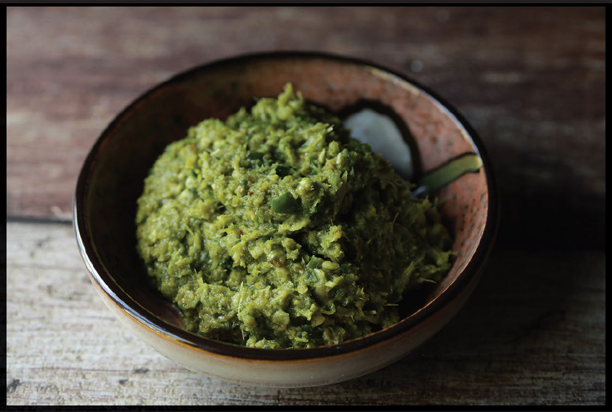

GREEN CURRY PASTE
|
Yield Makes about ⅔ cup (160 ml) |
Active Time 20 minutes Total Time 20 minutes |
Thai bird chiles are very hot. You can use serrano or jalapeño peppers or any other green chile to reduce the heat level. See the chart on here for substitutions on difficult-to find ingredients. You can also make this curry paste using one of the other techniques on here. You can use miso paste in place of shrimp paste if you want to keep this vegetarian. If you want to store this in the fridge indefinitely, add an additional teaspoon of salt (be careful not to overseason your dishes when cooking with this extra-salty curry paste!). Alternatively, pack the excess curry paste into zipper-lock freezer bags with the air pressed out and store in the freezer indefinitely.
Green curry paste is known as kaeng khiao wan or “sweet green curry” in Thailand, a reference to its pale green color, which it gets primarily from fresh green chiles. It is typically spicier than red curry paste and works with a wide range of ingredients, including meat and poultry, seafood, and small Thai eggplants and tofu.
INGREDIENTS
One 2-inch knob galangal (1½ ounces/45 g), peeled and roughly chopped
6 fresh or dried makrut lime leaves, hard central stem removed and discarded, leaves roughly chopped (½ ounce/15 g)
2 stalks fresh lemongrass, bottom 3 to 5 inches only (2 ounces/60 g), tough outer leaves removed and discarded, tender core finely chopped
12 medium garlic cloves (40 to 50 g), roughly chopped
2 medium shallots (3 ounces/90 g), roughly chopped
2½ ounces (75 g/about 30) fresh green Thai bird chiles, stems removed, roughly chopped (see Notes)
½ ounce (15 g) cilantro root or stems, roughly chopped
2 teaspoons (5 g) freshly ground coriander seeds
1 tablespoon (7 g) freshly ground cumin seeds
1 teaspoon (3 g) freshly ground white peppercorns
1 ounce (30 g/about 1 cup) fresh Thai or Italian basil leaves
1 ounce (30 g/about 1 cup) cilantro leaves and fine stems
2 teaspoons (8 g) kosher salt
1 teaspoon (5 g) Thai shrimp paste (see Notes)
DIRECTIONS
Combine the galangal, lime leaves, lemongrass, garlic, shallots, chilies, cilantro root, coriander, cumin, white pepper, basil, cilantro, and 1 teaspoon (4 g) salt in a mortar and pestle. Pound into a fine paste. Pound in the shrimp paste and an additional teaspoon (4 g) of salt. Store in the fridge for up to a week (see Notes).
